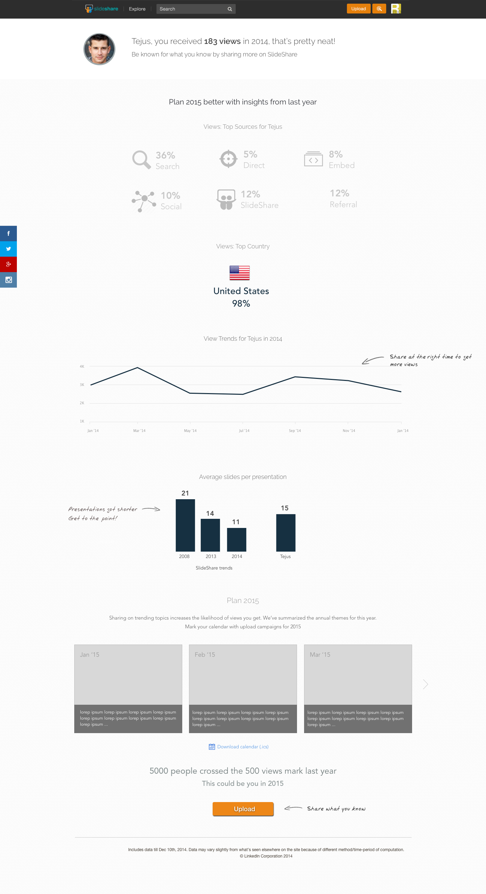
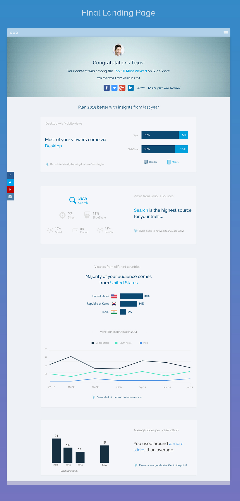
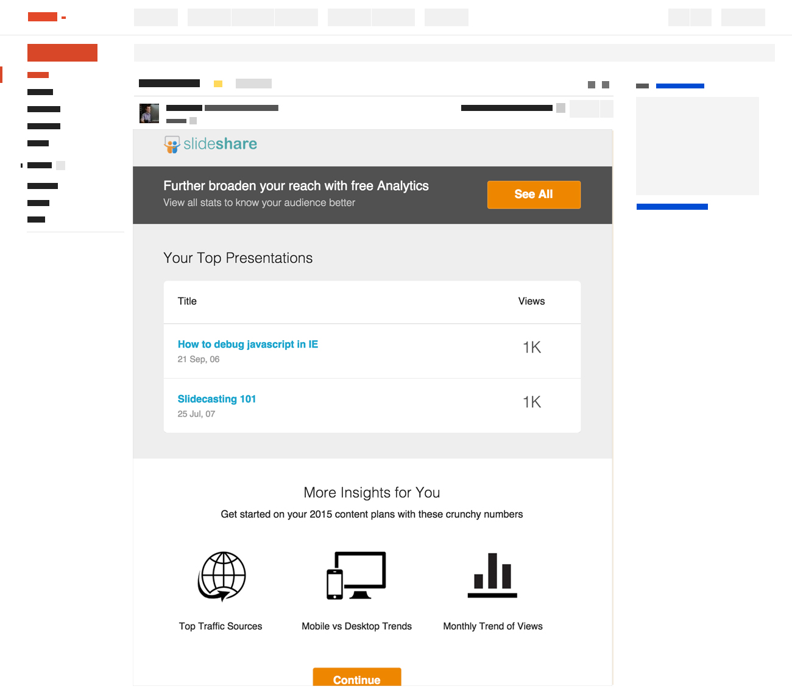

Its our yearly campaign where we want to share interesting insights about author's content with the author. It provides users with details about activity on their content and their network.
I led the design efforts of the campaign, I was responsible from conception to final implementation of the design.
SlideShare
Visual Design, Interaction Design, UI Development
Dec '14 – Jan '15
Random example
At SlideShare we followed a mobile first approach as we have seen a huge shift towards users accessing slideshare on mobile. Also I tried to follow a maodular approach as the design would be diffferent for different users. Some may have a different data point displayed in a different manner. Also we had to provide relevant feedback as per the users information.
We started the personalized year in review last year to highlight the users accomplishments in the last year and highlight them. We user to do a SlideShare general year review before that where we shared interesting insights about SlideShare data with users such as average slides used, top popular regions.
The personalized data added a touch of gamification as we were able to showcase certain users whose data have performed better that others, which kind of gave them bragging rights. People loved these insights and these were shared and tweeted by number of people.
This year we also had the added benefit of free analytics to all users where they can see additional data and see other interesting facts.
Also as we modified voice and tone for different users; posiitive and cheerful for users that were in the spotlight and neutral for others. The entire messaging was reviewed and we added the suggestions by the LinkedIn voice and tone team.
Kept the visual theme near to LinkedIn keeping it professional and clean. Also it would allow user to focus on the insight and information and then drive the user about the suggestion by SlideShare.
We have seen in our previous email campaigns that a simple more textual mail have a better CTR and open rates hence we used a very simple and clean design for the same. Also the mail needed to be responsive so that users on mobile version have a better viewing experience.
Will be sharing the final data soon...